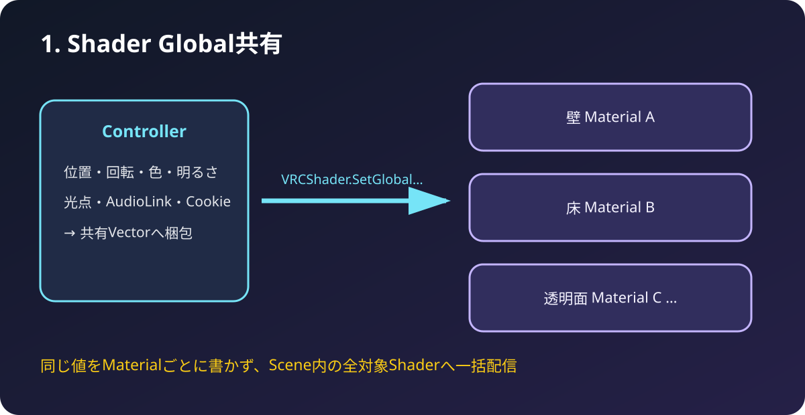
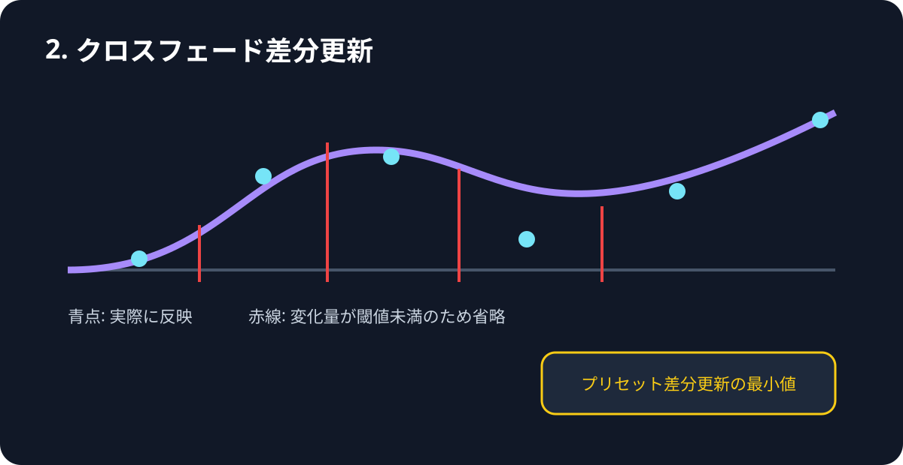
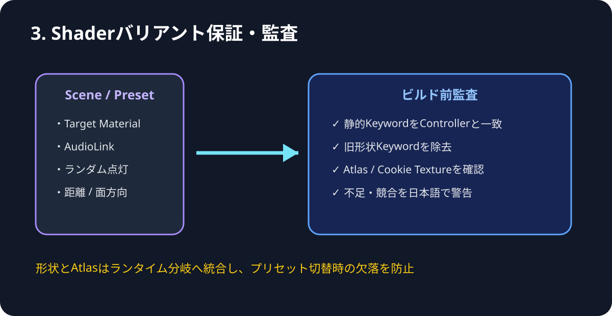
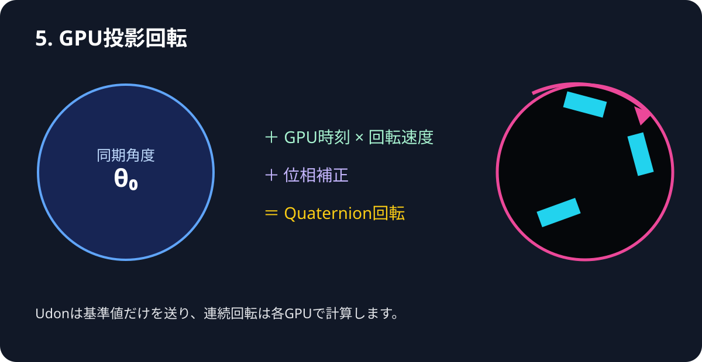
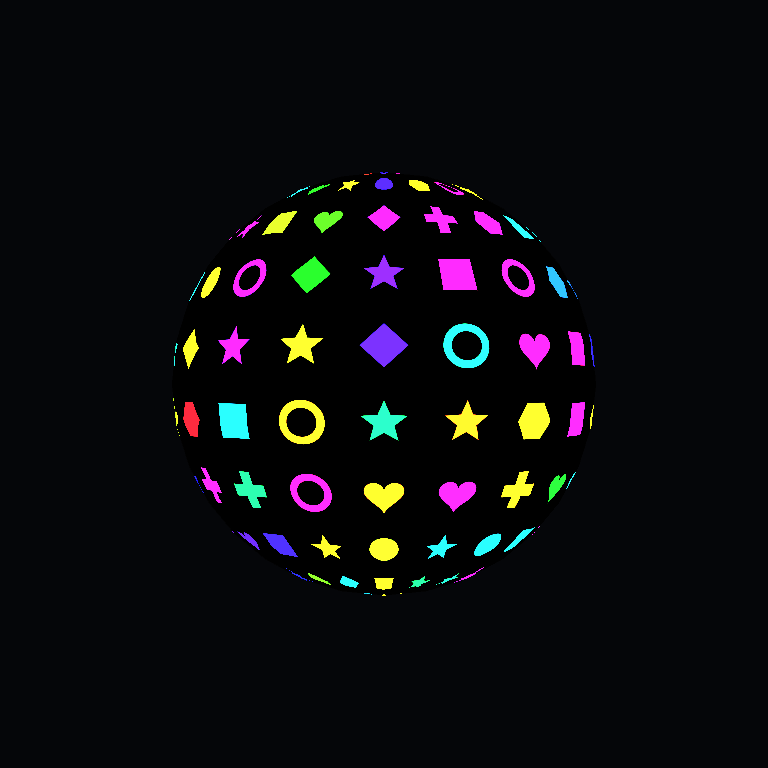
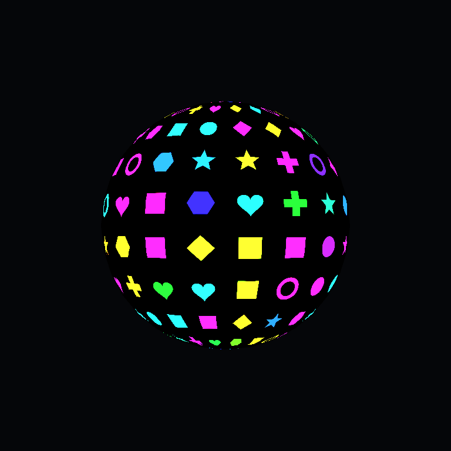
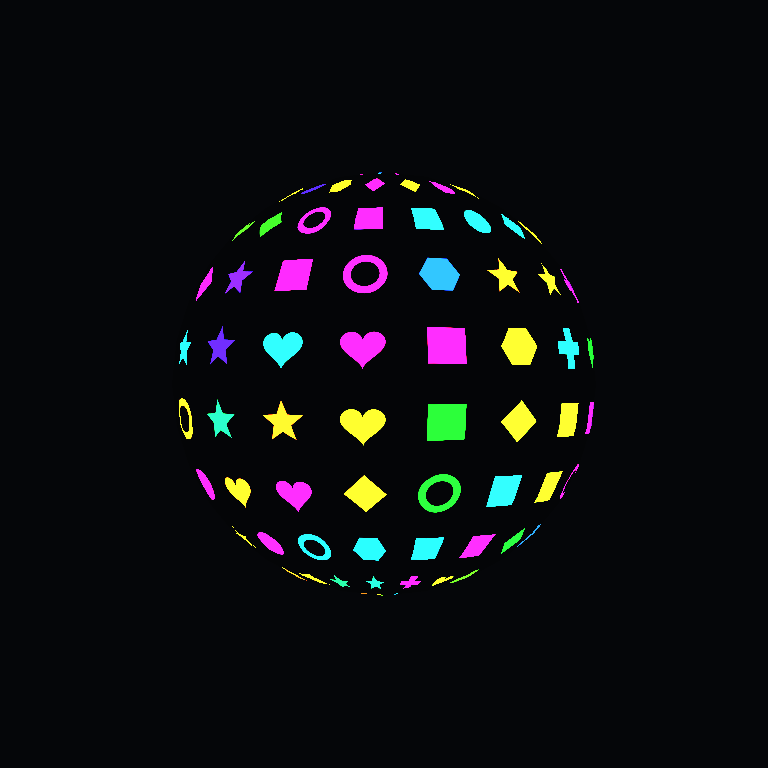
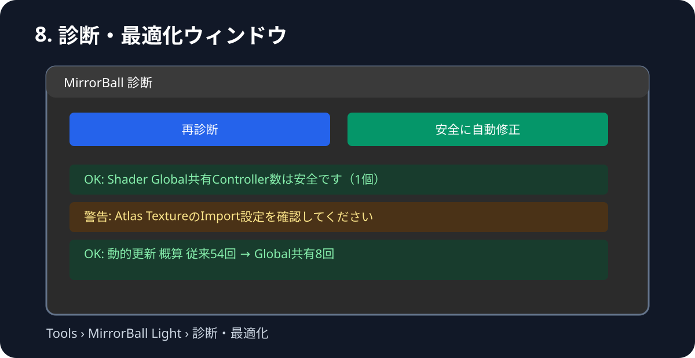

MirrorBallLightController
最適化・診断マニュアル
R22系で追加した「1・2・3・5・8」の機能を、Unity上の日本語項目と対応させて説明します。R22.1ではUnity上の表示名をバージョン非依存に整理しました。
導入と最初の設定
- R22.1 ZIP内の
Assets/MirrorBallLightをUnityプロジェクトのAssetsへコピーします。 - Unityのコンパイル完了後、既存ControllerのInspectorを開きます。
- 「10. 最適化・診断」の Shader Global共有を使用（推奨） と 投影回転をGPUで計算（推奨） をONにします。
- 現在の設定をマテリアルへ反映・保存 を押し、続けて 診断・最適化ウィンドウを開く から診断します。
1. Shader Global共有

R21までは位置、回転、色、電源などをTarget Materialごとに書き込んでいました。R22では共有値をVectorへ梱包し、VRCShader.SetGlobal… で全対応Shaderへ一括配信します。診断画面の概算では、6 Materialなら動的Setterは従来約54回からGlobal共有約8回になります。
外部ShaderやR21以前のSurface ShaderはGlobal値を読みません。必ずR22.1同梱の4種類のSurface Shaderを使ってください。
2. クロスフェード差分更新

ライブプリセットのクロスフェード中、前回反映値との差が小さいフレームを省略します。見た目の滑らかさを維持しつつ、短時間に同じ値を何度も送る負荷を減らします。形状・Texture・AudioLink帯域などの離散値は、従来どおり遷移中央で安全に切り替わります。
0.001 推奨。大きくすると更新は減りますが、低速フェードで段差が見える可能性があります。マテリアル更新頻度（回/秒）30を基準に、遠景中心なら20、滑らかさ重視なら45程度から調整します。3. Shaderバリアント保証・監査

Texture形状とAtlas形状はKeyword別Shaderから、1つのランタイム安全分岐へ統合しました。これにより、アップロード後にプリセットで形状を切り替えた際、必要なShaderバリアントが削除されて表示されない事故を防ぎます。AudioLink・ランダム点灯・面方向・距離フェード・Global共有は静的Keywordとして残し、Controller設定とMaterialを診断機能が一致させます。
- 通常Surface Shaderの独立ローカルKeyword要因は、理論上の組合せが64から32へ減少します。
- VRCLightVolumes連携版は、LightVolumes分を含め128から64へ減少します。
- 実際のコンパイル数にはSurface Shaderが生成する照明バリアントも加わります。
通常のUnity Build直前にも監査が走ります。VRChat SDK側の独自ビルド経路では実行タイミングが異なる可能性があるため、アップロード前に診断ボタンを押す運用を推奨します。
5. GPU投影回転

Controllerは同期基準角度と位相だけを送り、連続する投影回転はShader内で計算します。回転軸はQuaternionで処理するため、任意軸の精度と途中参加時の同期を維持しながら、毎更新のMaterial回転値送信を省略できます。
Unity 2022.3 実描画テスト



位相0度と90度の比較で47,992ピクセルが変化し、通常版・透過連携版の両方でGlobal値とGPU回転を確認しています。
8. 診断・最適化ウィンドウ

Controller Inspectorの「10. 最適化・診断」、またはUnityメニュー Tools › MirrorBall Light › 診断・最適化 から開きます。
確認する項目
- Global共有Controllerの重複
- Target Materialの重複・対象外Shader
- ControllerとMaterial Keywordの不一致
- 旧方式の形状Keyword残留
- Atlas / Texture形状 / 2D Cookie / Cubemapの未設定
- Atlasの容量超過とTexture Import設定
- 従来方式とGlobal共有方式の動的Setter概算
安全に自動修正 は、対応MaterialのKeyword・非表示プロパティと、Atlas Textureの Clamp / MipMap OFF / Alpha Is Transparency ON を修正します。参照オブジェクトの自動置換やPreset削除は行いません。
サンプルTextureについて
今回の5機能は最適化・診断機能のため、新しい専用Textureは必要ありません。Textureが必要な形状確認には、R21から同梱している SampleShapeAtlas_4x2.png（四角・丸・ひし形・十字・星・ハート・六角形・リング）を使用できます。診断機能はこのTextureのImport設定も検査します。
{kind=link}
推奨チェック手順
- 対象マテリアルをシーンから自動検出
- 現在の設定をマテリアルへ反映・保存
- 診断画面で「安全に自動修正」
- Consoleの赤エラーが0であることを確認
- Play Modeで電源、Presetクロスフェード、GPU回転を確認
- VRChat Build & Test後にアップロード